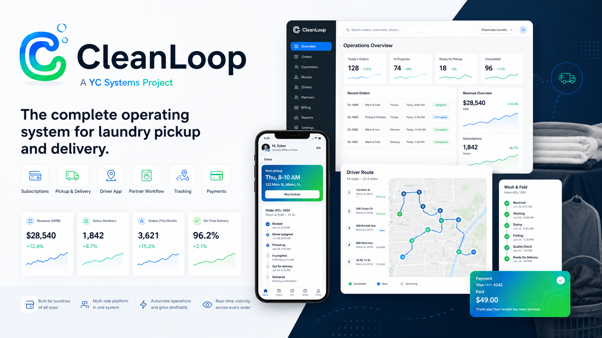

YC Systems / Sistemas operativos
Operaciones de lavandería SaaS
CleanLoop
A SaaS operating system for laundries that need pickup, delivery, subscriptions, drivers, payments and customer tracking in one platform.Un sistema operativo SaaS para lavanderías que necesitan recogida, entrega, suscripciones, conductores, pagos y seguimiento de clientes en una sola plataforma.
Recogida y delivery
Pagos y membresías
Apps cliente/driver

Acceso temprano
Apps cliente/driver
Pagos y membresías
Qué vende CleanLoop
Menos llamadas manuales y más pedidos, rutas y clientes bajo control
CleanLoop convierte una lavandería tradicional en una operación digital: clientes hacen pedidos, el equipo controla estados, los drivers gestionan rutas y el negocio puede vender membresías recurrentes.
Pedidos
Recogida, entrega, estados, historial y comunicación con clientes desde una base central.
Operación
Panel para administrar órdenes, drivers, servicios, membresías, pagos y reportes diarios.
Experiencia móvil
Apps cliente/driver preparadas para pedidos, estado de servicio, rutas y comunicación desde el teléfono.
Escalamiento
Base lista para pagos, membresías, multiempresa, analítica, notificaciones, facturación y crecimiento comercial.
CleanLoop es el tipo de producto que YC Systems puede adaptar para operaciones con rutas, clientes, pagos y equipos.